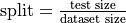
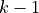
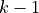

Hyper-parameter 101
Hyper-parameters intuition
Hyper-parameters are parameters of a classifier (monoview or multiview) that are task-dependant and have a huge part in the performance of the algorithm for a given task.
The simplest example is the decision tree. One of it’s hyper-parameter is the depth of the tree. The deeper the tree is, the most it will fit on the learning data. However, a tree too deep will most likely overfit and won’t have any relevance on unseen testing data.
This platform proposes a randomized search and a grid search to optimize hyper-parameters. In this example, we first will analyze the theory and then how to use it.
Understanding train/test split
In order to provide robust results, this platform splits the dataset in a training set, that will be used by the classifier to optimize their hyper-parameter and learn a relevant model, and a testing set that will take no part in the learning process and serve as unseen data to estimate each model’s generalization capacity.
This split ratio is controlled by the config file’s argument split:. It uses a float to pass the ratio between the size of the testing set and the training set :
. In order to be as fair as possible, this split is made by keeping the ratio between each class in the training set and in the testing set.
So if a dataset has 100 samples with 60% of them in class A, and 40% of them in class B, using split: 0.2
will generate a training set with 48 samples of class A and 32 samples of class B and a testing set
with 12 samples of class A and 8 samples of class B.
Ths process uses sklearn’s StratifiedShuffleSplit to split the dataset at random while being reproductible thanks to the random_state.
Understanding hyper-parameter optimization
As hyper-parameters are task dependant, there are three ways in the platform to set their value :
If you know the value (or a set of values), specify them at the end of the config file for each algorithm you want to test, and use
hps_type: 'None'in the config file. This will bypass the optimization process to run the algorithm on the specified values.If you have several possible values in mind, specify them in the config file and use
hps_type: 'Grid'to run a grid search on the possible values.If you have no ideas on the values, the platform proposes a random search for hyper-parameter optimization.
Grid search
The grid search is useful when one has several possible sets of hyper-parameters to test, as it is faster thant random-search but requires a relevant prior on the classification task.
In order to use grid search in SuMMIT, one has to specify hps_type: "Grid" in the config file and provide the values for each parameter of each algorithm in hps_args:.
For example, let us suppose that one wants to run a decision tree but wants to try several depth values (1,5,10), then one has to specify in the config file :
hps_type: "Grid"
hps_args:
decision_tree:
max_depth: [1,5,10]
For more complex classifiers this process can be quite long, but it allows a shorter computational time.
Random search
The random search is one of the most efficient while fairest method to optimize hyper-parameter without any prior knowledge on the dataset. Thus, for each algorithm in the platform, each of its hyper-parameter is provided with a distribution of possible values, (for example, the decision tree’s max depth parameter is provided with a uniform distribution between 1 and 300). The random search method will randomly select hyper-parameters within this distribution and evaluate the performance of the classifier with this configuration. It will repeat that process with different randomly selected sets of hyper-parameter and keep the best configuration performance-wise.
In the config file, to enable random search, set the hps_type: line to hps_type: "Random".
The the randomized search can be configured with two arguments :
hps_type: "Random"
hps_args:
n_iter: 5
equivalent_draws: True
The n_iter parameter controls the number of random draws for each classifier
and if equivalent_draws is set to True, then the multiview classifiers
will be allowed iterations,
to compensate the fact that they have to solve a musch more complex problem than the monoview ones.
K-folds cross-validation
During the process of optimizing the hyper-parameters, the random search has to estimate the performance of each classifier.
To do so, the platform uses k-folds cross-validation. This method consists in splitting the training set in
 equal sub-sets, training the classifier (with the hyper-parameters to evaluate) on  subsets an
testing it on the last one, evaluating it’s predictive performance on unseen data.
equal sub-sets, training the classifier (with the hyper-parameters to evaluate) on  subsets an
testing it on the last one, evaluating it’s predictive performance on unseen data.
This learning-and-testing process is repeated times and the estimated performance is the mean of the
performance on each testing set.
In the platform, the training set (the 48 samples of class A and 32 samples of class B from last example) will be divided in k folds for the cross-validation process and the testing set (the 12 samples of class A and 8 samples of class B for last samples) will in no way be involved in the training process of the classifier.
The cross-validation process can be controlled with the nb_folds: line of the configuration file in which the number
of folds is specified.
Metric choice
This hyper-parameter optimization can be strongly metric-dependant. For example, for an unbalanced dataset, evaluating
the accuracy is not relevant and will not provide a good estimation of the performance of the classifier.
In the platform, it is possible to specify the metric that will be used for the hyper-parameter optimization process
thanks to the metric_princ: line in the configuration file.